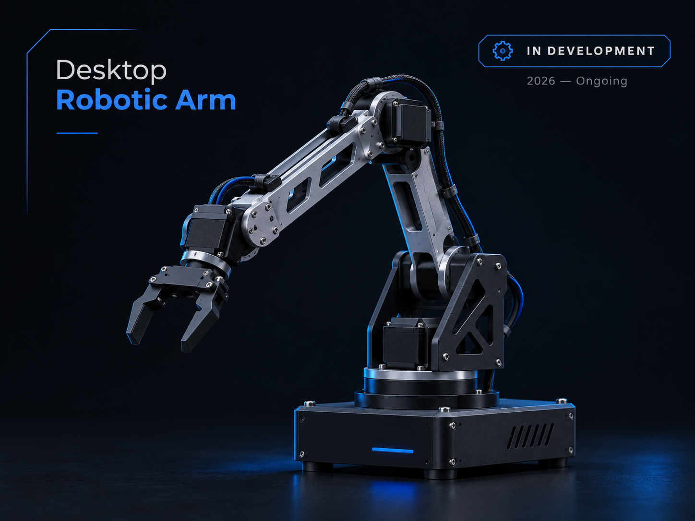
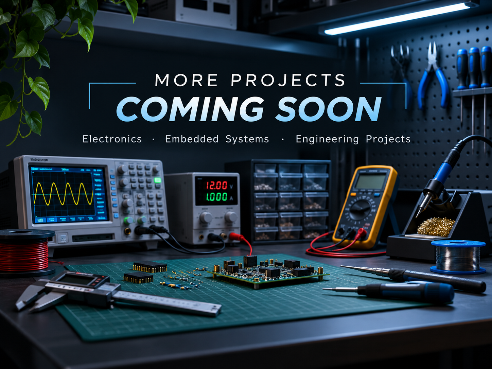

Robotics · Embedded Systems
Desktop Robotic Arm
Development of a compact robotic arm focused on speed, accuracy, payload capability and low-cost engineering.
Electrical Engineering
Building practical systems across electronics, embedded control and robotics.
Electrical Engineering student at James Cook University.
Portfolio

Robotics · Embedded Systems
Development of a compact robotic arm focused on speed, accuracy, payload capability and low-cost engineering.

Electronics
Additional electronics, embedded systems and university engineering projects will be added here.
About
I'm an Electrical Engineering student at James Cook University with interests in embedded systems, electronics, robotics and control. I enjoy developing practical projects that combine hardware, software and engineering analysis.
Contact